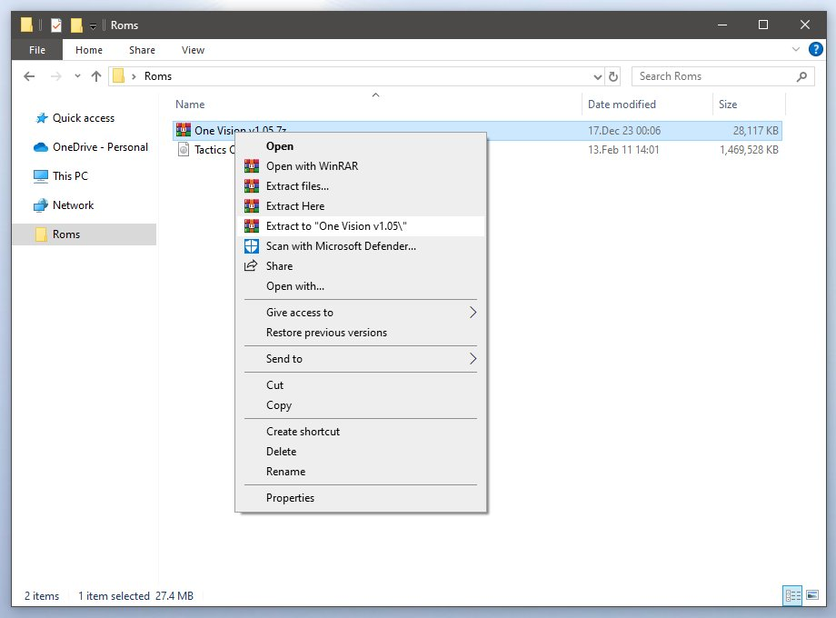

If you're using the PPSSPP emulator, or any emulator that can run a folder with game files like an ISO use the first method. It's easier, faster and requires only general purpose software, so it can be done on pretty much any device that the emulator is available on.
For the original PSP hardware or emulators that can only run a game from an ISO image, use the second method.
-
Required software:
- File manager for copying the extracted files, the guide will use Solid Explorer for android
-
Any file archiver able to extract .iso and .7z files
The guide will use the 7Z archiver on Android, but you can use anything you like, something like Peazip is fine for Windows, Linux or Mac
-
Start by putting the game iso and the mod archive in one folder, you don't have to but it's more convenient.
-
Click the game iso, then 'Attempt Extract' and then 'Extract here'.
If updating an older version of the mod, you can skip this step and use your existing folder with game files.
-
Do the same with the mod archive and you will end up with two folders, one with the game files and one with the mod files.
-
Close the 7Z archiver app, open your file manager and navigate to the previous folder.
-
Open the mod folder, then long press the 'PSP_GAME' until you get the action menu on the bottom. Click on the copy icon.
-
Go back to the previous folder, then open the folder with game files and you will see another 'PSP_GAME' folder. Click on 'Paste'.
-

When asked if you want to merge the folder, check 'Remember', then 'Merge'.
Then you will be asked if you want to overwrite the files. Check 'Remember', then 'New'.
-
Now go back and then open the mod folder again and open the data install folder matching your game version.
If you aren't sure which version you bought, you can load the iso in PPSSPP and long press the icon in the game list until you get the game info screen, it should show 'ULUS10565' if you have the USA version and 'ULES01500' if it's the EUR version.
If updating from an older version of the mod you don't need to apply the data install fix again so you can skip this and the next two steps.
-

Inside, you will find another 'PSP_GAME' folder. Long press it, copy it, navigate to the game folder again and paste it there.
-
Merge the folder and overwrite the files.
-
To make adding the game to PPSSPP simpler, you can now remove everything except the folder with the game files.
-
Open PPSSPP, go to the 'Games' tab and click 'Browse'.
-
Navigate to the folder where the one with game files is located, click 'Use this folder' and then grant PPSSPP access to it.
-
That's it, you can now start the game.
For best experience, it is recommended to also use the HD UI texture pack by Sirbagsalot.
-
Required software:
-
You need UMDGen for this method. It's a Windows software, but some were able to use Wine to run it on Linux or Mac, though I haven't tried that myself.
Alternatively, some ISO editors can do the job. From own experience UltraISO works fine, but it's a paid tool so if you need it just for this I can't recommend it. - You also need any archiver that can unpack 7z files, you probably already have one.
-

Start by extracting the mod to its own folder.
-
Start UMDGen and open your ISO image.
You can use an existing ISO image with an older mod version if you have it at hand, there's no real need to get a fresh one.
In case that UMDGEN won't load, go to start menu, then right click on 'My Computer' and click properties. Then go to 'Advanced System Settings', then go to advance tab and click settings on 'Performance'. Then go to 'Data Execution Prevention' (you must change the setting to 'All Programs') then click add and find UMDGEN. When you're done you can put it back the way it was.
-
When the image opens, check if you're located in the root of the image so you can see the 'PSP_GAME' folder on the right.
-
Open the mod folder, then drag&drop the 'PSP_GAME' folder to the UMDGen window.
You will then be asked if you want to overwrite the existing files, click 'Yes to all'.
-
Now open the data install folder matching your game version.
If you aren't sure which version you bought, you can check it in UMDGen. Select the 'UMD Properties' tab and it will show the code under 'Disc name', then go back to 'Explorer' tab.
If updating from an older version of the mod you don't need to apply the data install fix again so you can skip this and the next step.
-
Inside the data install folder, you will see another 'PSP_GAME' folder. Drag&drop the 'PSP_GAME' folder to the UMDGen window.
Inside the data install folder, you will see another 'PSP_GAME' folder. Drag&drop it to the UMDGen window and click 'Yes to all' when asked to overwrite.
-
Click 'File -> Save as -> Uncompressed (*.iso)'.
Then pick a location to save the new ISO image, and give it a name you can recognize, preferably include the mod version.Now you can use the ISO image in any emulator, or on original PSP hardware if it's able to load images.
-
You need UMDGen for this method. It's a Windows software, but some were able to use Wine to run it on Linux or Mac, though I haven't tried that myself.